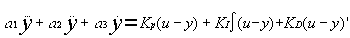
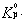
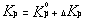
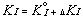
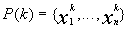
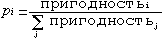
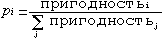

Оптимизация параметров регулятора
с использованием нечетких оценок
и генетического подхода
С.В. Жукова, Ю.Н. Золотухин
Лаборатория нечетких технологийИнститут автоматики и электрометрии
Сибирское отделение РАН
Россия
630090, Новосибирск, просп. ак. Коптюга, 1
Тел.: (3832) 332625, Факс: (3832) 333863
E-mail: zolotukhin@iae.nsk.su
http://www.idisys.iae.nsk.su
Предложен метод выбора коэффициентов регулятора, обеспечивающих заданный вид переходной кривой замкнутой системы управления. Использованы нечеткие оценки параметров переходной кривой и генетический алгоритм для поиска эффективных решений. Приведен численный пример, демонстрирующий работоспособность метода.
1. В практике автоматического управления известны различные методы настройки параметров регулятора, например, методика Циглера-Никольса [1]. Однако, обеспечивая устойчивость системы и удовлетворительное качество переходного процесса, эти методы не позволяют вести целенаправленный подбор параметров регулятора для получения переходной кривой заданного вида. В данной работе рассмотрена задача получения заданной переходной характеристики путем направленного перебора параметров регулятора.
 |
Для часто используемого ПИД (пропорционально-интегрально-дифференциального) - регулятора управляющее воздействие определяется как ,где KP, KI, KD - параметры. Их значения определяют характеристики замкнутой системы регулирования.
2. Рассмотрим модель замкнутой системы с объектом третьего порядка и ПИД-регулятором. Она описывается дифференциальным уравнением: , решение которого при единичном скачке на входе определяет кривую переходного процесса в системе. Для оценки качества переходного процесса в инженерной практике нередко используются следующие параметры (рис. 2):
|
Рис. 2. Вид переходной характеристики и ее параметров |
- tн - время нарастания, т.е. время, за которое переменная y(t) возрастает с 0.1 до 0.9 установившегося значения ,
- S - "выброс" (максимальное превышение сигналом y(t) единичного уровня),
- tз - время затухания переходного процесса ( время между моментом первого достижения
сигналом y(t) единичного уровня и моментом, начиная с которого значения y(t) остаются внутри
интервала [],
- некоторая постоянная).
3. Оценка переходной кривой по упомянутым выше параметрам (tx, S, tз) представляет собой многокритериальную задачу. Для ее решения воспользуемся предложенным Р. Беллманом и Л. Заде методом слияния целей и ограничений [2]. Введем лингвистические переменные "время нарастания", "время затухания", "выброс" и определим на каждой из них терм "приемлемое значение" как нечеткое множество с функцией принадлежности трапецеидального вида. Пример функции принадлежности для терма "приемлемое значение" лингвистической переменной "выброс" приведен на рис.3.

Рис. 3 Функция принадлежности для терма "приемлемое значение" лингвистической переменной "выброс" |
4. С учетом изложенного схема поиска приемлемой кривой переходного процесса может выглядеть
следующим образом:
а) эксперт задает функции принадлежности терма "приемлемое значение" для трех рассматриваемых параметров;
б) одним из известных методов вычисляются начальные величины коэффициентов регулятора
(,  ,
,
 );
);
в) вводятся случайные значения поправок к начальным величинам коэффициентов
(DKp,
DKI и
DKD).;
г) вычисляются новые значения коэффициентов
,
,

д) производится расчет переходной характеристики путем решения уравнения (3) с коэффициентами,
полученными в п. (г);
е) вычисляются значения параметров t н, S,
t з;
ж) вычисляется степень принадлежности m(x) каждого из
параметров к нечеткому множеству "приемлемое значение" соответствующей лингвистической переменной;
з) вычисляется общая оценка переходной кривой по выражению (4).
Затем процедура повторяется при новых значениях поправок.
5. В качестве метода эффективного нахождения следующих значений коэффициентов регулятора
выбран генетический подход.
Генетические алгоритмы (ГА) это поисковая техника, имитирующая законы природной селекции и генетики [3].
Структура простого генетического алгоритма выглядит следующим образом. На протяжении к-ой итерации ГА
сохраняет популяцию потенциальных решений (хромосом)
.
Каждое решение  оценивается некоторой мерой пригодности (fitness). Затем формируется новое поколение ((k+1)-итерация)
путем селекции (отбора) решений в соответствии с мерой пригодности. Вероятность быть отобранным в следующее
поколение выражается в виде .
Некоторые решения из следующего поколения подвергаются действию генетических операторов
(кроссовера и мутации) для образования новых решений [4]. Кроссовер (рис.4) комбинирует
характеристики пары решений A и B для получения двух решений - потомков (C и D) путем взаимного
обмена сегментами родительских хромосом. Мутация произвольно изменяет один или несколько генов в
выбранной хромосоме (рис.5).
Алгоритм завершает работу при достижении заданных значений пригодности либо числа поколений.
Структурная схема работы генетического алгоритма представлена на рис.6.
Для оценки эффективности предложенного метода проведен подбор коэффициентов ПИД-регулятора в
системе с объектом третьего порядка (T1=0.1с, T2=0.2с, T3=0.7с).
оценивается некоторой мерой пригодности (fitness). Затем формируется новое поколение ((k+1)-итерация)
путем селекции (отбора) решений в соответствии с мерой пригодности. Вероятность быть отобранным в следующее
поколение выражается в виде .
Некоторые решения из следующего поколения подвергаются действию генетических операторов
(кроссовера и мутации) для образования новых решений [4]. Кроссовер (рис.4) комбинирует
характеристики пары решений A и B для получения двух решений - потомков (C и D) путем взаимного
обмена сегментами родительских хромосом. Мутация произвольно изменяет один или несколько генов в
выбранной хромосоме (рис.5).
Алгоритм завершает работу при достижении заданных значений пригодности либо числа поколений.
Структурная схема работы генетического алгоритма представлена на рис.6.
Для оценки эффективности предложенного метода проведен подбор коэффициентов ПИД-регулятора в
системе с объектом третьего порядка (T1=0.1с, T2=0.2с, T3=0.7с).
| Х1 | X2 | |
| t н | 0.4 | 0.8 |
| S | 0.3 | 0.6 |
| t з | 1.5 | 2.0 |
- размер популяции 10;
- число поколений 20;
- вероятность кроссовера 0.9;
- вероятность мутации 0.001;
- точность вычислений 0.0001.
Рис. 7. Графики значений пригодности лучшего решения (1) и средней пригодности (2) в каждом поколении |
 Рис. 8. Исходная (1) и полученная (2) переходные кривые |
7. Таким образом, продемонстрирована методика целенаправленного поиска значений коэффициентов регулятора, обеспечивающих заданный вид отклика замкнутой системы управления на единичный скачок уставки. Использование сочетания нечетких оценок параметров и генетического метода поиска позволило построить эффективную процедуру подбора. Численный пример с объектом третьего порядка и ПИД-регулятором продемонстрировал эффективность метода. Данный подход применим к достаточно широкому классу задач.
Список литературы
- Кондратьев В.В., Мазуров В.М.,
"Быстродействующий адаптивный ПИДрегулятор с настройкой параметров по методу Циглера Никольса
// Теплоэнергетика, 1994, ╬10, с.60-63. - Giuseppe Munda,
"Multicriteria evaluation in a fuzzy environment",
Physica-Verlag, 1995. - Chuck Karr,
"Genetic Algorithms for Fuzzy Controllers",
AI Expert, Febriary, 1991, pp.25-32. - Kim Chwee Ng, Yun Li,
"Design of Sophisticated Fuzzy Logic Controller Using Genetic Algorithms"
// in Proc. 3rd IEEE Int. Conf. On Fuzzy System, Orlando, FL, June, 1994, vol.3, pp.1708-1712. - D.E. Goldberg.
"Genetic Algorithms in Search, Optimisation and Mashine Learning."
Addison-Wesley, 1989.
©1997, 1998 Fuzzy Technologies Lab.
mailto: zolotukhin@iae.nsk.su